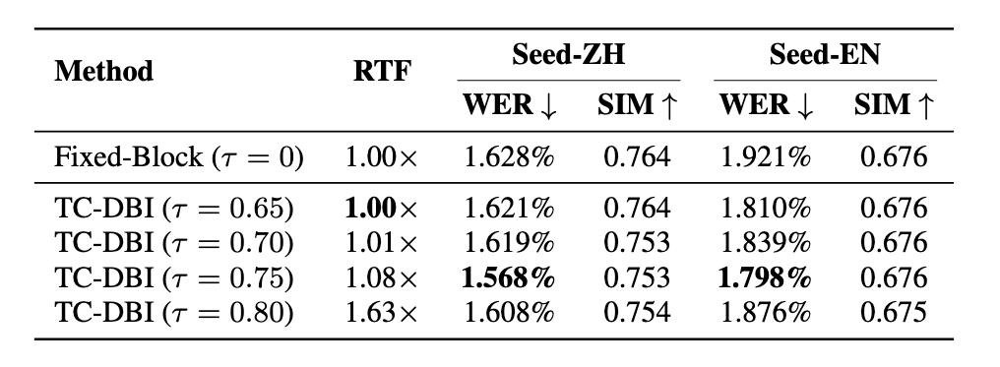

TC-DBI: A Plug-and-Play Trajectory Confidence-Guided Dynamic Block Inference Strategy for Speech Synthesis with Continuous Block Flow Matching
Abstract: Block Flow Matching combines block-level autoregression with intra-block parallelism for efficient and high-quality Text-to-Speech (TTS). However, using a fixed block size during inference ignores the non-uniform modeling difficulty of speech, which can cause unstable velocity estimation in challenging regions. This motivates the need for a reliability metric that can guide dynamic adjustment of block size. We propose Trajectory Confidence (TC), a geometric measure derived from trajectory straightness during ODE integration, and introduce TC-Guided Dynamic Block Inference (TC-DBI), a plug-and-play strategy that truncates and regenerates unreliable regions to adapt block size without architectural changes. Experiments show that TC correlates strongly with generation errors, and TC-DBI improves robustness and perceptual quality while maintaining comparable efficiency.
Model Architecture

Fig. 1: An overview of our proposed model architecture.
Main Results

We conducted our evaluations on the seed-test-zh and seed-test-en benchmarks from Seed-TTS. Since no publicly available BFM model matches our training scale, we reproduced a Block Flow Matching model (BFM) as a baseline. For a comprehensive comparison, we also include CosyVoice2, MaskGCT, and F5-TTS, covering AR and NAR paradigms.
| 文本 (Transcript) | CosyVoice2 | F5-TTS | MaskGCT | BFM (ours) |
BFM with TC-DBI (ours) |
|---|---|---|---|---|---|
| 中文 (Chinese) | |||||
| 一个挪动一步，另一个也挪一步，可都是斜着步子兜圈子。 | |||||
| 小丁要根据现有微信截图，要回奖金的概率。 | |||||
| 关键是气质女神啊，一开始先买一部新车。 | |||||
| 你要什么有什么，那里有正装也有休闲的衣服。 | |||||
| 窗帘几乎全烧光了，挂窗帘的棍被烧得通红，四边全是火焰。 | |||||
| 英文 (English) | |||||
| It is operated by the New York City Department of Parks and Recreation. | |||||
| While at Cambridge he also gained experience in using the telegraph. | |||||
| Next was "The Last King of Scotland", which won an Oscar for best actor. | |||||
| Dense clouds of smoke or dust can be seen through a powerful telescope. | |||||
| The bridge is located just west of Commodore Park. | |||||
Ablation Study: Impact of Confidence Threshold τ

To further examine how trajectory confidence translates into inference gains, we evaluate TC-DBI under different thresholds τ.
| 文本 (Transcript) | Fixed Block Size | τ = 0.65 | τ = 0.70 | τ = 0.75 | τ = 0.80 |
|---|---|---|---|---|---|
| 中文 (Chinese) | |||||
| 当我们做体验时，我们到底在做什么。 | |||||
| 如果您不愿意开刀的话，那就只能使用缓慢排水法。 | |||||
| 这薄壳被外面的水泡软，被雪和泥土温暖，被阳光射透。 | |||||
| 小黑狗摆摆尾巴说，我身上没有汗腺，可舌头上有许多汗腺的呢。 | |||||
| 但是这个大坝仍然不排除垮坝的可能性。 | |||||
| 英文 (English) | |||||
| Next was "The Last King of Scotland", which won an Oscar for best actor. | |||||
| For the full history, see List of Southern Conference men's basketball champions. | |||||
| There is also a genetic test that can be done for this disorder. | |||||
| He last served as a member of parliament from the opposition. | |||||
| In May of the same year he was made Chaplain to the King. | |||||